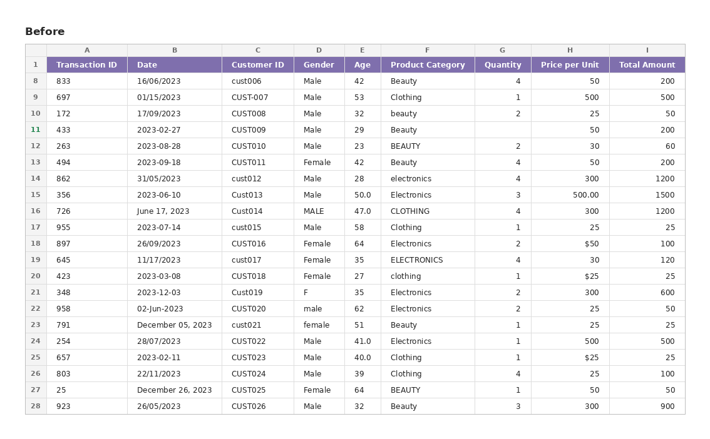
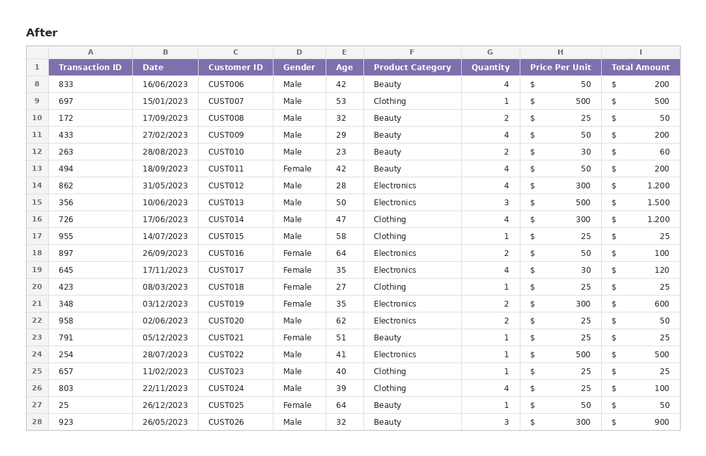
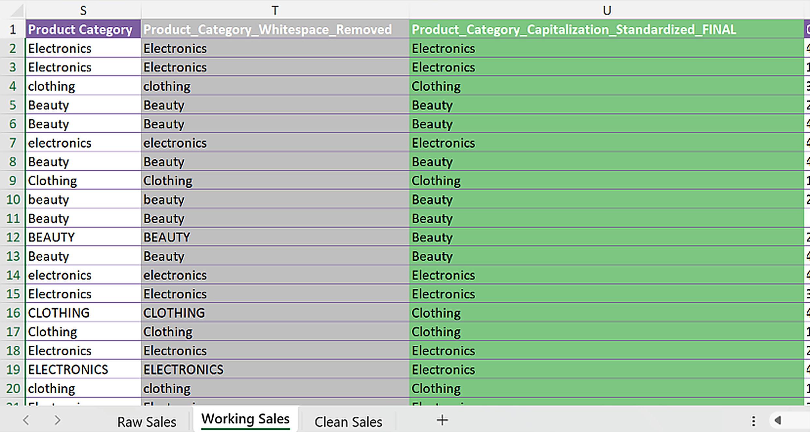
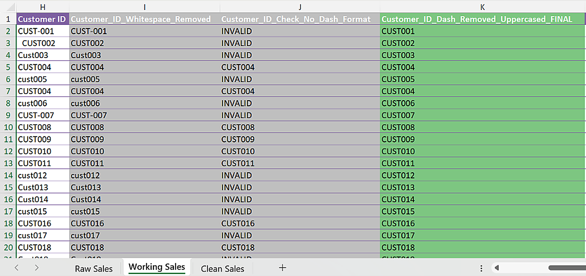
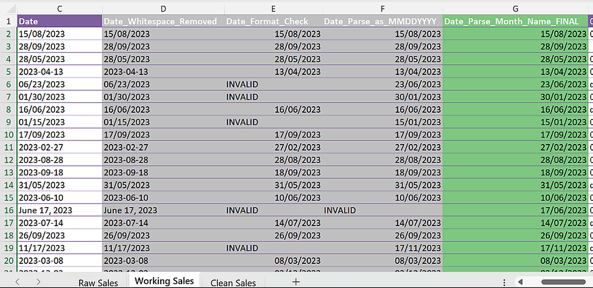
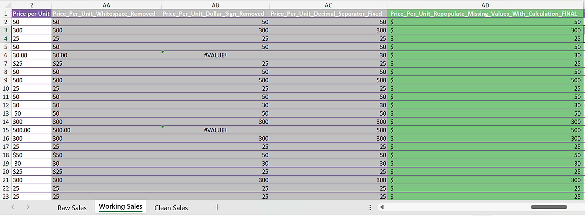
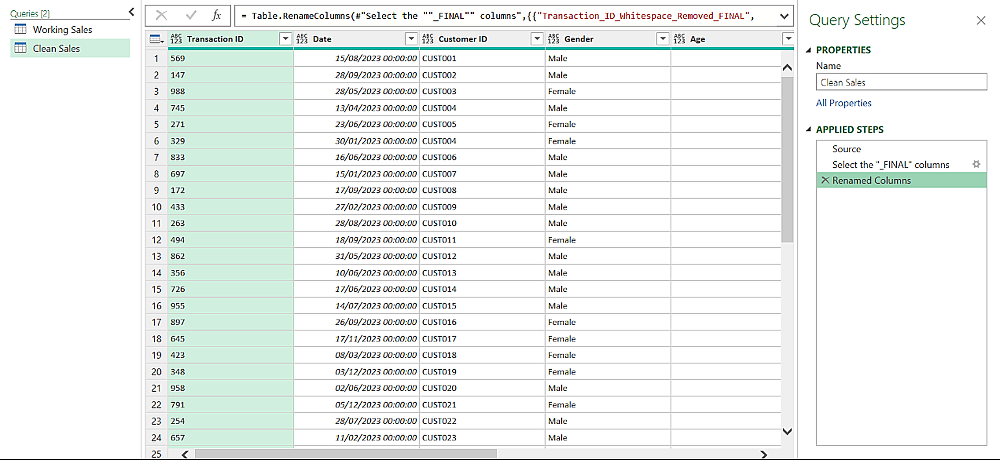
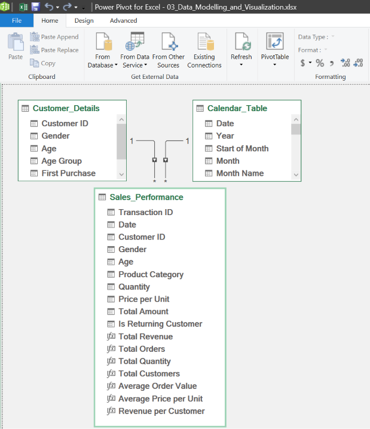
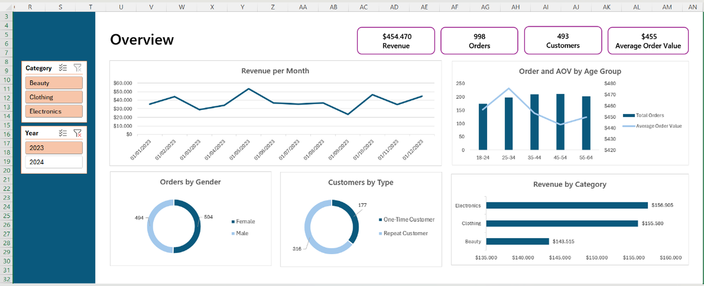

Retail Sales Performance Analysis
Tools: Excel (Data Profiling, Cleaning, Modelling & Visualization)


Key Excel features used in this project:
- Structured Tables with dynamic column references
- Text functions: TRIM, CLEAN, SUBSTITUTE, TEXTBEFORE/TEXTAFTER
- Lookup functions: VLOOKUP, XLOOKUP, MINIFS
- Array formulas for conditional bucketing
- Power Query for data import
- Power Pivot with a relational data model and DAX measures
This project takes the entire pipeline, from raw data to dashboard, was built in Excel. A messy retail sales dataset was profiled and cleaned using structured formulas (with every transformation step kept visible for audit purposes), modeled into a relational structure using Power Pivot, and visualized in an interactive dashboard.
The project includes:
- Raw data ingestion via Power Query
- Formula-based data profiling and cleaning, with a full audit trail per column
- A relational data model built with Power Pivot and DAX measures
- An interactive Excel dashboard with PivotCharts and slicers
The Dataset
The dataset used in this project is based on the Retail Store Inventory Forecasting Dataset, publicly available on Kaggle. The original data was modified with the help of Claude AI to intentionally introduce messiness, simulating the kind of inconsistencies found in manually recorded retail data.
The dataset contains retail sales transactions, including transaction ID, customer ID, customer demographics (gender and age), product category, quantity, price per unit, and total amount.
The raw data included inconsistencies typical of manually recorded retail data: mixed date formats, inconsistent capitalization, extra whitespace, currency symbols mixed into numeric fields, and missing values in quantity, price, and total amount.
Project Architecture
The project follows the same layered approach as the other two projects, adapted to an Excel workflow:
- Raw Layer: the original data, imported and kept untouched.
- Staging Layer: data profiled and cleaned through a visible, step-by-step formula chain.
- Data Warehouse Layer: data modeled into a relational structure using Power Pivot.
- Consumption Layer: an interactive dashboard built from the model.
A. Raw Layer
The raw CSV file was imported using Power Query and kept in its own sheet, untouched, so every later transformation could always be traced back to the original values.
B. Staging Layer
Every column was cleaned through a chain of formulas, with each transformation step kept in its own column instead of overwriting the previous one. This made it possible to trace exactly where and how a value changed, from the raw input to the final cleaned result.
Example 1: Product Category
A simple case: removing extra whitespace and standardizing capitalization.

Product_Category_Whitespace_Removed:
=CLEAN(TRIM([@[Product Category]]))
Product_Category_Standardized_FINAL:
=PROPER([@Product_Category_Whitespace_Removed])Source: 02_Data_Processing.xlsx, "Working Sales" sheet
Example 2: Customer ID
A format validation case: each Customer ID was expected to follow a "CUST" prefix followed by numbers, with no dashes. IDs that didn't match this format were still standardized rather than rejected.

Customer_ID_Whitespace_Removed:
=CLEAN(TRIM([@[Customer ID]]))
Customer_ID_Check_No_Dash_Format:
=IF(
AND(
EXACT(LEFT([@[Customer ID]],4),"CUST"),
ISNUMBER(TEXTAFTER([@[Customer ID]],"CUST")),
ISERROR(FIND("-",[@[Customer ID]]))
),
[@Customer_ID_Whitespace_Removed],
"INVALID"
)
Customer_ID_Dash_Removed_Uppercased_FINAL:
=IF(
[@Customer_ID_Check_No_Dash_Format]="INVALID",
UPPER(SUBSTITUTE([@Customer_ID_Whitespace_Removed],"-","")),
[@Customer_ID_Whitespace_Removed]
)Source: 02_Data_Processing.xlsx, "Working Sales" sheet
Example 3: Date
A more complex case: the raw data mixed three different date formats (MM/DD/YYYY, YYYY-MM-DD, and "Month Name DD, YYYY"). Each format was tested in sequence, falling through to the next parsing method if the previous one failed.

Date_Format_Check:
=IF(ISNUMBER(--[@Date_Whitespace_Removed]),
DATE(YEAR(--[@Date_Whitespace_Removed]), MONTH(--[@Date_Whitespace_Removed]), DAY(--[@Date_Whitespace_Removed])),
"INVALID")
Date_Parse_as_MMDDYYYY:
=IFERROR(
IF([@Date_Format_Check]="INVALID",
DATE(RIGHT([@Date_Whitespace_Removed],4), LEFT([@Date_Whitespace_Removed],2), MID([@Date_Whitespace_Removed],4,2)),
[@Date_Format_Check]),
"INVALID")
Date_Parse_Month_Name_FINAL:
=IFERROR(
IF([@Date_Parse_as_MMDDYYYY]="INVALID",
DATE(
RIGHT([@Date_Whitespace_Removed],4),
MATCH(TEXTBEFORE([@Date_Whitespace_Removed]," ",1),
{"January";"February";"March";"April";"May";"June";
"July";"August";"September";"October";"November";"December"},0),
RIGHT(TEXTBEFORE([@Date_Whitespace_Removed],","),2)
),
[@Date_Parse_as_MMDDYYYY]),
"INVALID")Source: 02_Data_Processing.xlsx, "Working Sales" sheet
Example 4: Price per Unit
A three-layer case: removing currency symbols, fixing decimal separators, and repopulating missing values using the relationship between total amount and quantity.

Price_Per_Unit_Whitespace_Removed:
=CLEAN(TRIM([@[Price per Unit]]))
Price_Per_Unit_Dollar_Sign_Removed:
=INT(SUBSTITUTE([@Price_Per_Unit_Whitespace_Removed],"$",""))
Price_Per_Unit_Decimal_Separator_Fixed:
=INT(
IFERROR(
[@Price_Per_Unit_Dollar_Sign_Removed],
SUBSTITUTE([@Price_Per_Unit_Whitespace_Removed],".",",")
)
)
Price_Per_Unit_Repopulate_Missing_Values_With_Calculation_FINAL:
=IFERROR(
[@Price_Per_Unit_Decimal_Separator_Fixed],
[@Total_Amount_Converted_To_Integer] / [@Quantity_Converted_To_Integer]
)Source: 02_Data_Processing.xlsx, "Working Sales" sheet
The same step-by-step pattern (remove whitespace, standardize format, convert data types, and repopulate missing values where possible) was applied across every remaining column before the results were consolidated into a single clean table using Power Query by selecting all columns whose names end with "FINAL".

C. Data Warehouse Layer
The cleaned data was restructured into a relational model using Power Pivot, similar in spirit to a star schema: a central fact table holding transaction-level data, linked to supporting tables holding descriptive attributes.
The model consists of:
Sales_Performance, the fact table (one row per transaction)Customer_Details, built with VLOOKUP and XLOOKUP against the fact tableCalendar_Table, a date dimension supporting time-based analysis

Relationship diagram from Power Pivot's Diagram View
On top of this model, DAX measures were written in Power Pivot to calculate metrics such as total revenue, total orders, and average order value, which were then used directly in the dashboard's PivotTables and PivotCharts.
D. Consumption Layer
The data model was connected to an interactive Excel dashboard, built from PivotTables and PivotCharts driven by the DAX measures.
The dashboard includes:
- KPI cards for total revenue, orders, customers, and average order value
- Revenue per Month: a line chart of monthly revenue trends
- Order and AOV by Age Group: a combo chart comparing order volume and average order value across age groups
- Orders by Gender and Customers by Type: doughnut charts
- Revenue by Category: a horizontal bar chart
- Slicers for filtering by category and year

Key insights:
- Electronics generated the highest revenue among all product categories
- Order volume and average order value were fairly consistent across age groups, with 45 to 54 placing highest in both
- The customer base was close to evenly split between one-time and repeat customers
View the Full Project
The complete project, including all Excel files and formulas, is available on GitHub.